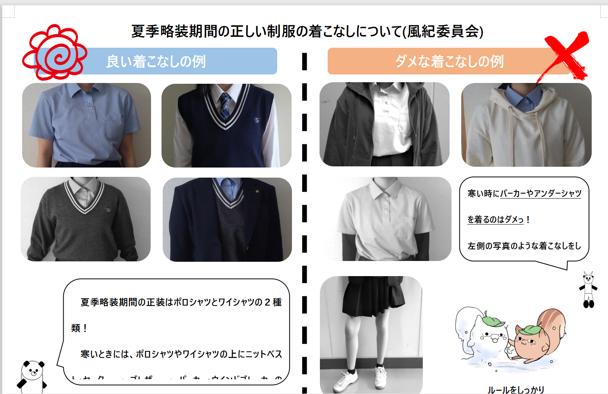

開催日:4月中旬
開催場所：第2体育館
担当:ーーー
準備期間:2週間
執行部の説明では、生徒会の役割についてに加え研修生の制度に関しても説明します。
交流会より前から研修生の受付を開始しても構いませんが、5月10日くらいで締め切りましょう。
執行部の説明時には組織図を使うとよいですが、あまり堅苦しくならないようにしましょう。
交流会時は通常授業のため、執行部複数名は公欠をもらいましょう。
名簿を作成し顧問に提出です。
常任委員会の説明は基本的に各委員長が行います。power pointを使って委員会について説明します。
普段の活動に加え学校祭時など行事にフォーカスして分かりやすい資料づくりを心がけましょう。一つの委員会当たり1～２分くらいの持ち時間にすると新入生が疲れずに聞くことができると思います。
風紀委員の説明の時のみ制服の着こなしの説明に加えファッションショーを行います。
風紀委員長の指示で正装以外の違反服装を複数用意し、違反例として紹介しましょう。
そのため会長、委員長に加え庶務から4，5人準備しておきましょう。
BP委員会については執行部外に委員長がいる場合もありますが説明は執行部で行うといいでしょう。
執行部内でBP担当がいるはずなのでその生徒がパワポを使用して説明します。BP委員は動画での説明でもいいかもです。
放送局が作成してくれた動画があると思います。更新が必要かもしれないので確認しましょう。
BP委員の新規募集はおそらく年度初めに用意されています。確認をして交流会で伝えましょう。
学校行事に関してはパワポか動画で説明するといいでしょう。
行事すべてを紹介するのではなく、季節ごとに分けて説明するといいでしょう。
生徒会の公式Instagramを動かす場合はここで宣伝しましょう。
アカウントの写真と投稿を複数枚パワーポイントに加えましょう。
執行部を間近で見る初めての機会になるのでここでかっこいいところを見せられると研修生が増えます。頑張りましょう